The long way to Nashville.
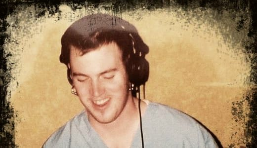
1998
Pressing my own vinyl
It started with house music. I was a DJ making beats and pressing my own records.
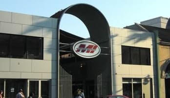
2003
Scrubbing toilets
Back to school at Musicians Institute in Hollywood, and an internship at Studio Atlantis. I started at the very bottom.
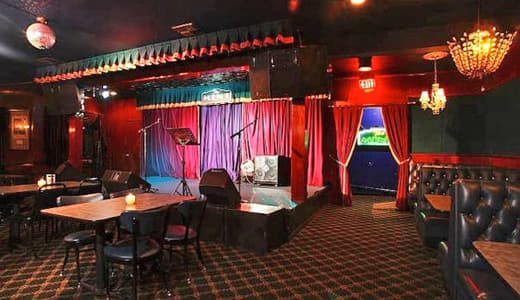
2004
The night shift
Paid engineer through college at The Mint on Pico: a Neve console behind the jazz club, 5:30 in the evening to 2:30 in the morning.
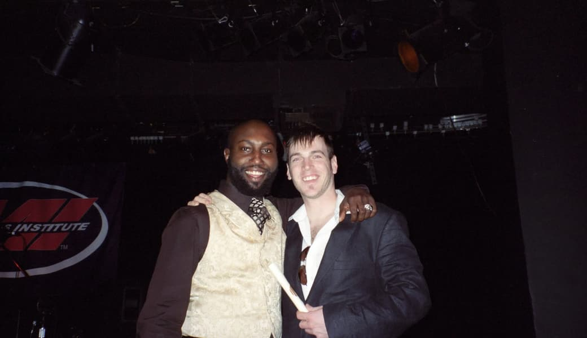
2006
Graduation and the fire
In March I graduated from Musicians Institute. Shortly after, I came back to my studio to find it destroyed by a wiring fire. Instead of quitting, I went on tour playing keys for a country artist, and that tour ended in Nashville.
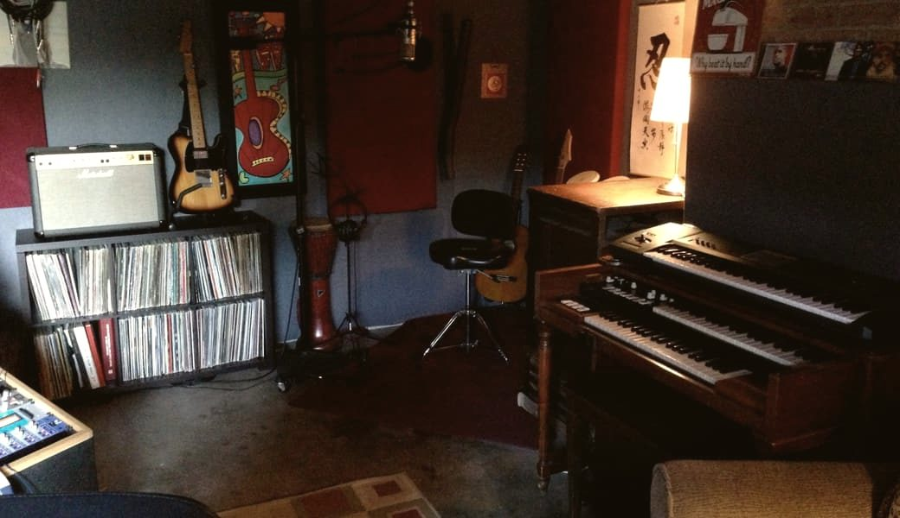
2009
A garage on Simpson Avenue
Back to Los Angeles to rebuild. I opened Dr. Ford Productions in a garage in North Hollywood, and started over one song at a time.
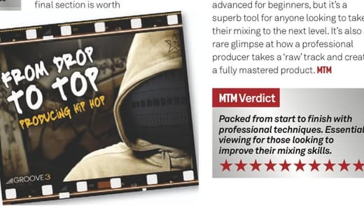
2011
The first award
My five-hour Groove3 masterclass, “From Drop to Top,” earned MusicTech Magazine’s Award of Excellence and a perfect 10 out of 10. Their verdict: “Essential viewing for those looking to improve their mixing skills.”
2012
The first #1
“I’m Not Perfect” by Cheesa featuring Charice went to #1 on iTunes, ahead of “Gangnam Style.” I did the post-production and the mix.
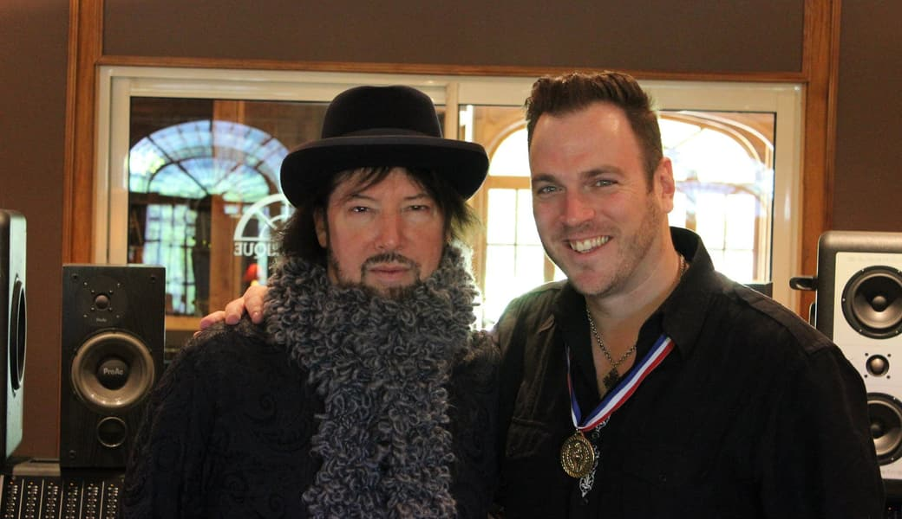
2014
A dream come true
I was chosen to study with Jack Joseph Puig, the Grammy-winning mixer behind records by U2, John Mayer, Sheryl Crow, Green Day and the Goo Goo Dolls, at Studio La Fabrique in the south of France.
2015
Turn It Up
Hannah Anders’s “Turn It Up,” which I produced and mixed, won Best Song in Country/Rock at the Akademia Music Awards.
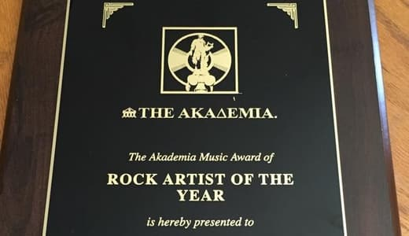
2015
Rock Artist of the Year
Nicky Barot’s “I Can’t Fall Asleep,” which I co-produced and mixed, won Best Song in Pop Rock at the Akademia Music Awards. Later that year, Nicky took Rock Artist of the Year.
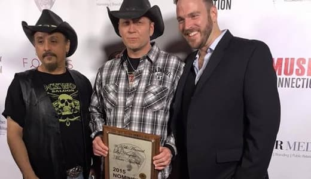
2015
Red carpet in LA
The album I produced and mixed for Michael D. Keeney earned him a Los Angeles Music Awards nomination for Best Artist. The next year, “South On 41” placed in the New Times Music Awards for Best Album, and “Like A Song” placed in Country/Folk/Americana.
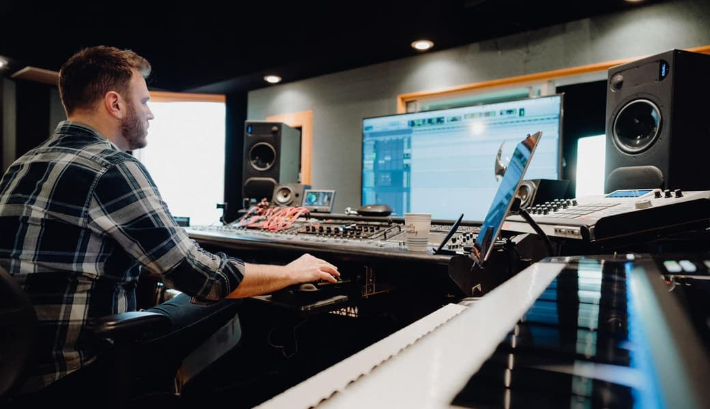
2017
Back to Nashville
Eleven years after a tour first landed me here, I came back to Nashville for good. On December 1, I took up residence in Studio C at the Sound Kitchen in Franklin, the seven-room complex where Taylor Swift, Keith Urban and Dolly Parton have all recorded. It was home for seven years.
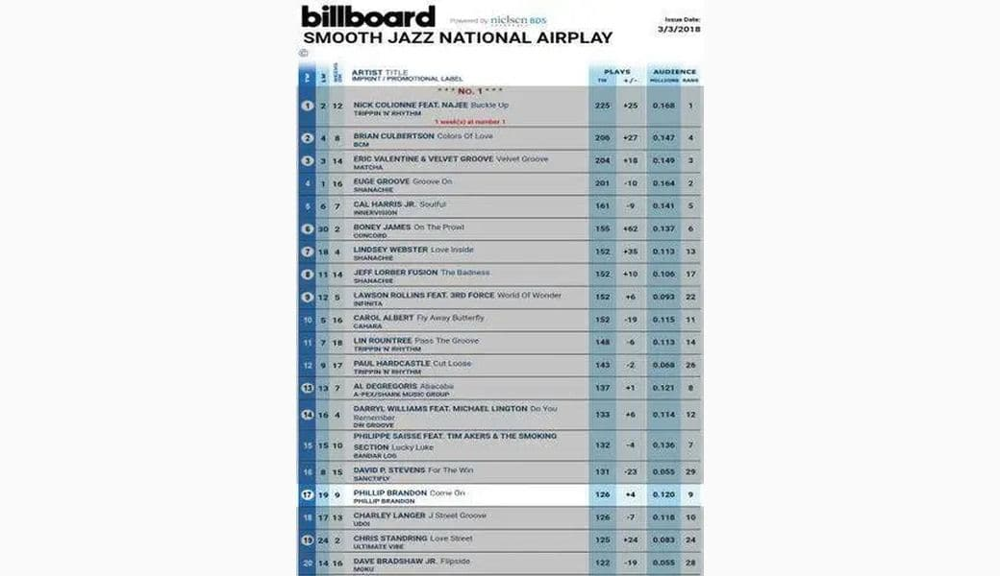
2018
On the Billboard chart
Phillip Brandon’s “Come On,” which I produced and mixed, climbed to #17 on Billboard’s Smooth Jazz National Airplay chart and spent 12 weeks on it.
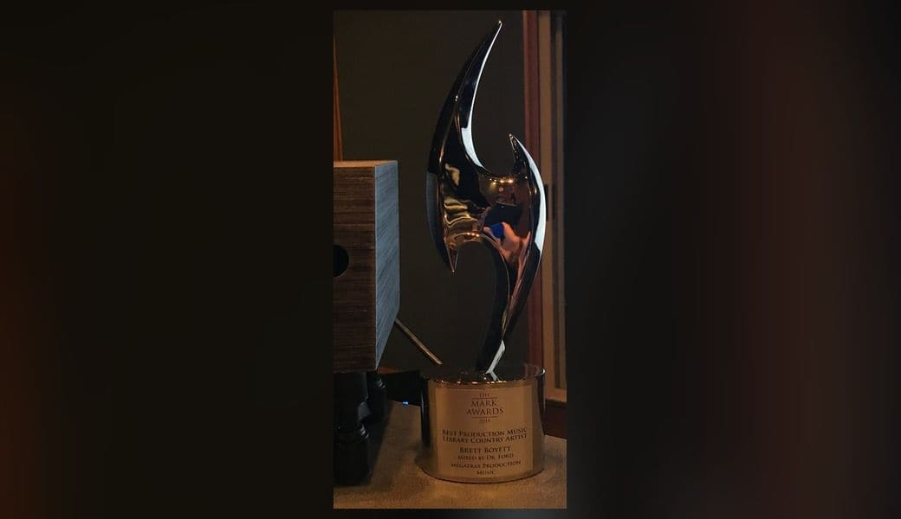
2018
My first statue
My first year back in Nashville brought a Mark Award from the Production Music Association for Best Production Music Library Country Artist: Brett Boyett for Megatrax, mixed by me.
2019
Number one, down under
Jade Gibson’s record went to #1 on iTunes Australian Country and #10 on the international Country Album chart, and her single hit #1 on ABC Radio. I did the post-production and the mix.
2019
SoundBetter Premium Pro
In November I was accepted into SoundBetter’s Premium Pro tier, which SoundBetter says accepts fewer than 1% of the producers who apply. I waited a year for that yes, and it’s still one of the proudest moments of my career.
2023
Three at once
Three #1s on iTunes and the #1 Country EP with Caitlin Mae.
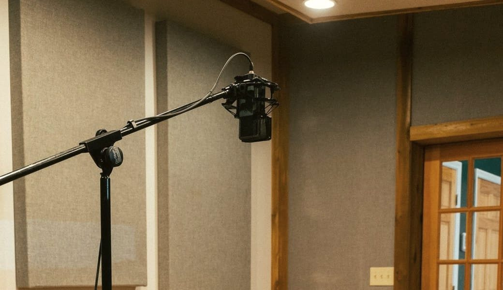
Next
Your record
Nine #1s, thirteen client awards and a private studio in Nashville. The next chapter is your song.